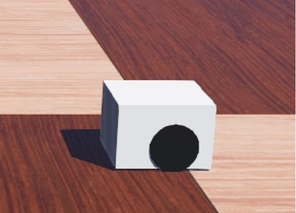
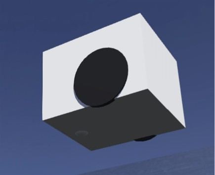

Multi-Robot Reinforcement Learning and Sim-to-Real Infrastructure
Ongoing Research · SMART Lab / Master's Thesis
This project develops a research framework for learning-based formation control with multiple mobile robots. Alongside the control policy, I am building the simulation, robot-modeling, localization, and evaluation infrastructure needed to compare learned and classical methods and move toward physical experiments.
Simulation environment
Webots provides a controlled setting for multi-robot formation and navigation experiments. The simulation supports coordinated behaviors and evaluation scenarios involving changes to the team or disruptions to the formation.

Robot models and simulation infrastructure
The infrastructure includes modeled mobile robots for testing control behavior and connecting simulated experiments with the physical platform. These views show the Hamster robot simulation model.


Learning-based formation control
The research investigates graph-based representations and multi-agent reinforcement learning for maintaining formations and recovering after disruptions. The goal is to evaluate how policies use local and team-level information to coordinate under changing conditions.
Localization and physical integration
A parallel part of the work concerns physical robot localization and actuation. Camera-based tracking and robot control interfaces form the basis for testing coordination methods beyond simulation and for comparing simulation and physical behaviors.
Evaluation plan
Planned comparisons focus on formation accuracy, collision avoidance, and recovery following disruptions, with classical controllers as baselines. This project is ongoing; quantitative results are not yet presented here.